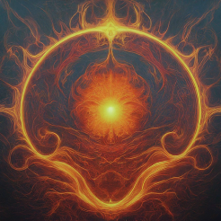
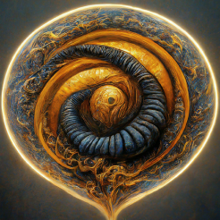

*Hover to see who has these Scorpio Placements*
People with Sun in Scorpio are known for their intensity and passion.


The Moon in Scorpio signifies deep emotions and intuition.

Mercury in Scorpio enhances communication with depth and insight.

Individuals with Venus in Scorpio are passionate and intense in love.


Mars in Scorpio signifies determination and assertiveness.

Jupiter in Scorpio encourages transformation and growth.

Saturn in Scorpio brings discipline and responsibility to emotions.

Uranus in Scorpio signifies innovative and transformative ideas.

Neptune in Scorpio enhances creativity and spirituality.

Pluto in Scorpio signifies transformation and power.

People with Scorpio Rising project mystery and magnetism.